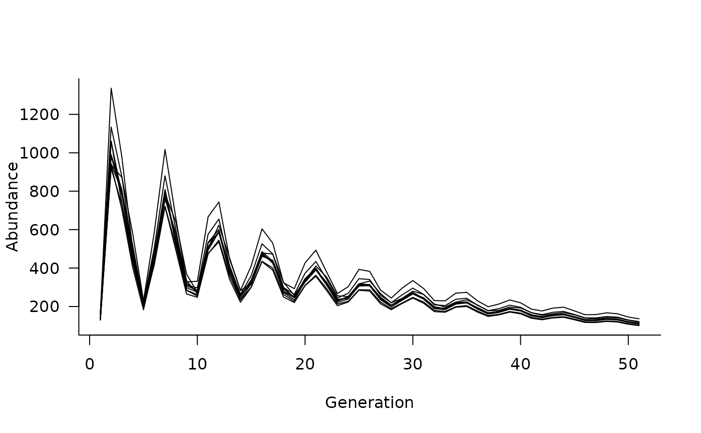

Specify dispersal between populations, including stochasticity and density dependence in dispersal parameters
Usage
dispersal(
kernel,
stochasticity_masks = NULL,
stochasticity_funs = NULL,
density_masks = NULL,
density_funs = NULL,
proportion = FALSE
)Arguments
- kernel
numeric matrix specifying the probability of specific classes moving between two populations. Matrices have the same columns-move-to-rows structure as in the population dynamics matrices described in
dynamics, so a non-zero value in cell (a, b) denotes a transition from class b in the source population to class a in the receiving population- stochasticity_masks
a logical matrix or list of logical matrices defining cells affected by
stochasticity_funs. See Details andmasks- stochasticity_funs
a function or list of functions with one element for each element of
stochasticity_masks. See Details- density_masks
a logical matrix or list of logical matrices defining cells affected by
density_funs. See Details andmasks- density_funs
a function or list of functions with one element for each element of
density_masks. See Details- proportion
logical indicating whether
kernelis specified in absolute probabilities or as a proportion of the source population (defaults toFALSE). IfTRUE, values inkernelare calculated as a proportion of the total probability an individual exits that class at any given time step
Value
dispersal object specifying probabilities of movement
between populations in a metapopulation matrix model; for use with
metapopulation
Examples
# define some populations, all with identical vital rates
nclass <- 5
popmat <- matrix(0, nrow = nclass, ncol = nclass)
popmat[reproduction(popmat, dims = 4:5)] <- c(10, 20)
popmat[transition(popmat)] <- c(0.25, 0.3, 0.5, 0.65)
# define a dynamics object
dyn <- lapply(
1:3,
function(i) dynamics(popmat)
)
# define metapopulation structure with populations
# 1 and 3 dispersing into population 2
pop_structure <- matrix(0, nrow = 3, ncol = 3)
pop_structure[1, 2] <- 1
pop_structure[3, 2] <- 1
# define dispersal between populations
dispersal_matrix <- matrix(0, nrow = nclass, ncol = nclass)
dispersal_matrix[survival(dispersal_matrix, dims = 20:25)] <- 0.2
pop_dispersal1 <- dispersal(dispersal_matrix, proportion = TRUE)
pop_dispersal2 <- dispersal(dispersal_matrix, proportion = FALSE)
pop_dispersal <- list(pop_dispersal1, pop_dispersal2)
# create metapopulation object
metapop <- metapopulation(pop_structure, dyn, pop_dispersal)
# simulate without covariates
sims <- simulate(metapop, nsim = 10)
# and plot the simulated trajectories
plot(sims)
